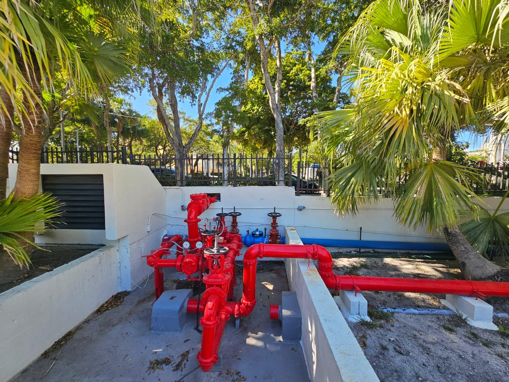

Una reconstrucción de infraestructura metódica de varios años entregó sistemas mecánicos modernos, reservas reconstruidas y confiabilidad operativa a largo plazo sin interrumpir la vida diaria.
Durante más de una década, la asociación recaudó solo el 11% del presupuesto operativo para reservas —el mínimo legal— mientras mantenía congeladas las cuotas de mantenimiento (HOA). Este subfinanciamiento crónico dejó la infraestructura crítica envejeciendo sin capital de reposición, y finalmente obligó a una cuota extraordinaria de casi $20 millones para atender mantenimiento diferido y fallas de sistema.
El estudio de reservas no se había actualizado en más de 10 años, y los sistemas mecánicos centrales—válvulas, bombas, generadores e infraestructura de soporte—estaban operando mucho más allá de su vida útil esperada.
Modernización del estudio de reservas: El estudio de reservas se actualizó en 2025 para reflejar los costos de reemplazo actuales, las condiciones del sistema y los requisitos de financiamiento realistas después de más de una década sin actualizaciones.
Disciplina de reconstrucción de reservas: Después de años financiando reservas en el mínimo legal, la Junta Directiva cambió a una estrategia sostenible de acumulación para reducir el riesgo futuro de cuotas extraordinarias.
Reemplazo sistemático de infraestructura: Casi todos los sistemas mecánicos críticos se reconstruyeron durante varios años—metódicamente, pieza por pieza—para evitar fallas catastróficas y minimizar la interrupción de la vida diaria de los residentes.
Reemplazo de válvulas y bombas 2025: Todas las válvulas principales en cada línea de agua fueron reemplazadas, junto con todas las bombas en ambas torres, modernizando los sistemas centrales de distribución de agua y presión.
Actualizaciones de generador, cuarto mecánico y equipo de soporte: Los componentes de infraestructura de alto riesgo recibieron reparación importante o reemplazo completo para mejorar la preparación para emergencias y la confiabilidad operativa.
Reemplazo de válvula antirretorno de agua potable (Edificio B): El dispositivo de backflow fue reemplazado por completo en 2025, después de que la unidad original superara su vida útil y quedara fuera de reparación. Esta actualización protege el suministro de agua del condado durante eventos de pérdida de presión, evitando contaminación por flujo inverso.

Estas mejoras no son “vistosas”, pero son lo que hace que la comunidad funcione con confiabilidad: cuartos de bombas reconstruidos, espacios mecánicos restaurados, tuberías modernizadas y una base de mantenimiento disciplinada que reduce fallas de emergencia.
Ejecución sin interrupción: El trabajo se coordinó para evitar cortes prolongados, con programación por fases y comunicación anticipada a residentes para mantener las operaciones diarias.
Los sistemas mecánicos centrales ahora operan con equipo moderno con riesgo de falla significativamente reducido. El financiamiento de reservas está en una trayectoria sostenible, y el estudio de reservas actualizado proporciona una hoja de ruta clara para la planificación de capital futura.
Este no fue un solo proyecto: fue un esfuerzo de recuperación de varios años para revertir más de una década de mantenimiento diferido y subfinanciamiento de reservas. El resultado es una propiedad con sistemas centrales modernizados, menor riesgo de reparaciones de emergencia y un modelo de reservas sostenible que protege a los propietarios frente a futuras cuotas extraordinarias.
El reemplazo de válvulas y bombas de 2025 por sí solo representa el tipo de trabajo fundamental que la mayoría de los propietarios nunca ven pero que impacta directamente la presión del agua, la confiabilidad del sistema y la integridad del edificio a largo plazo. Completar este trabajo metódicamente, sin interrupciones de servicio extendidas, requirió planificación cuidadosa y disciplina de ejecución.